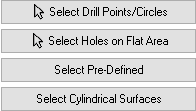
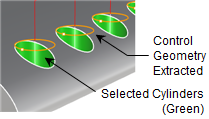

Hole Features Selection
Use this option to drill at specific locations. You can select Drill Points, Circles or partial Circles (i.e., Arcs), Flat Areas (with holes), Cylindrical Surfaces or Pre-Defined Regions. Use one of the Select buttons listed below on this dialog.

Select Drill Points/Circles
Pick the Select button to select features from the part and assign them to the Selected Machining Feature(s) list for the current operation.
Select Holes on Flat Areas
Pick the Select Holes on Flat Areas button to select a flat face from the graphics screen and assign it to the Selected Hole(S) list for the current operation as Flat Area 1, Flat Area 2, etc. All holes (i.e., circles) contained with the flat area feature are assigned to the current operation as group.
Select Pre-Defined
If you pick this button, the Select Pre-defined Machining Regions dialog will display, allowing you to select one or more Regions. This operation dialog will then re-appear with your region selections listed. Pre-Defined Regions can be created using the options on the Regions tab of the Machining Objects Browser.
Select Cylindrical Surfaces
Pick the Select Cylindrical Surfaces button to select one or more cylinders instead of points or circles. This is helpful when selecting points or circles is difficult. A circle will be created from the cylinder and used as the control geometry.

 Check the Use Diameter Filter box to select holes within a specified diameter range. You can enter Minimum Diameter and Maximum Diameter values. If you select the Pick button, the diameter value of the selected feature will be entered into the field. Note: These filter settings are saved with the part file. If your control geometry changes, you are warned to check your filter settings before proceeding. Check the Use Diameter Filter box to select holes within a specified diameter range. You can enter Minimum Diameter and Maximum Diameter values. If you select the Pick button, the diameter value of the selected feature will be entered into the field. Note: These filter settings are saved with the part file. If your control geometry changes, you are warned to check your filter settings before proceeding.
|
|
")